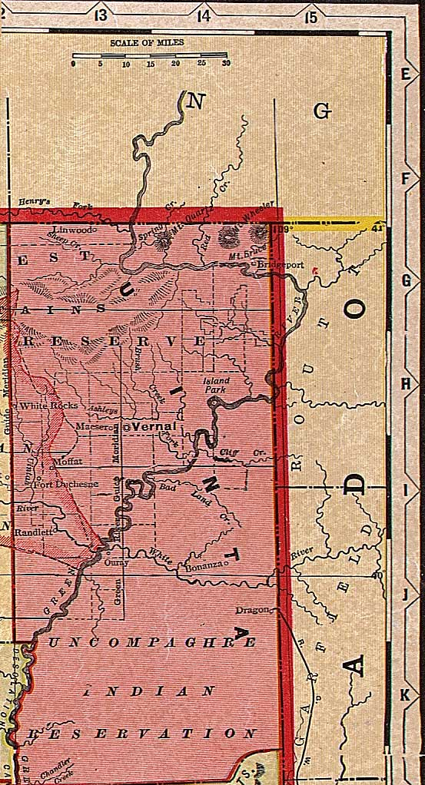

Uinta County, Utah, ca. 1908
From "Deseret Evening News New Home Library Wall Chart" (reprinted with permission)
Wyoming
All of Utah
Summit
County
Wasatch
County
Carbon
County

Colorado
Grand County
Note:
This includes present-day Daggett County (north part of the map)